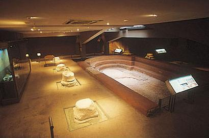

|
 |
En
el centro de Caesaraugusta, entre el espacio del foro y el teatro, se
alzaron en el siglo I a.e.c. y estuvieron en funcionamiento hasta
comienzos del siglo IV.
De las diversas estancias con que contaban estas
instalaciones, fundamentalmente se han conservado restos de unas letrinas
que fueron derribadas para construir sobre ellas una gran piscina
porticada, donde se podía nadar al aire libre. Para la mayoría de los
romanos las termas eran algo más que un lugar para la limpieza del
cuerpo, eran un centro de vida social y cultural, ya que en sus estancias,
además de bañarse, se podían practicar deportes, leer, pasear, escuchar
música o poesía.
Dentro del sistema que regía la vida política e
institucional de la colonia Caesaraugusta existía un cargo, el de edil,
entre cuyas numerosas funciones se encontraba supervisar la
administración, mantenimiento y conservación de las termas públicas,
propiedad de la ciudad que debían encontrarse bien abastecidas de agua
corriente y leña. |